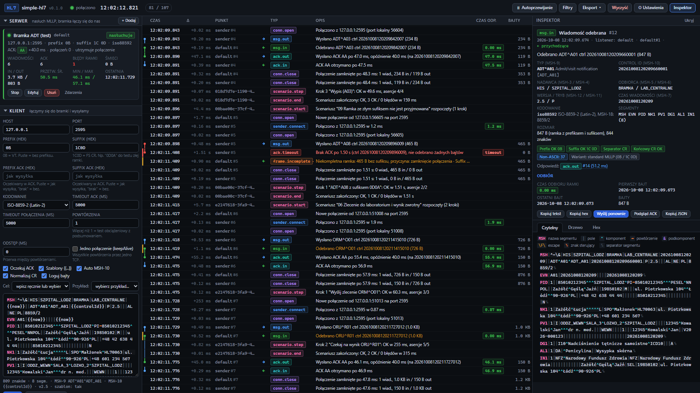
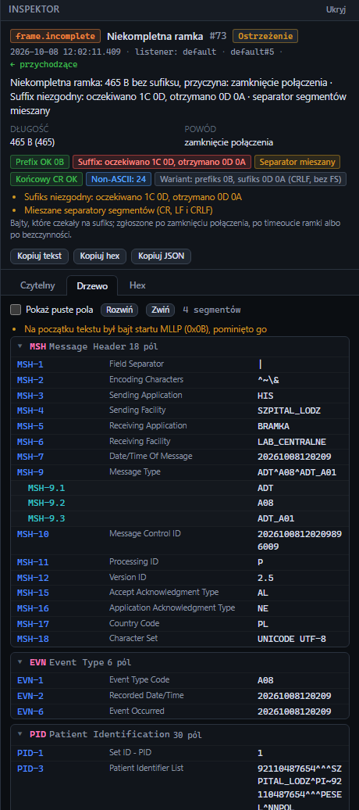
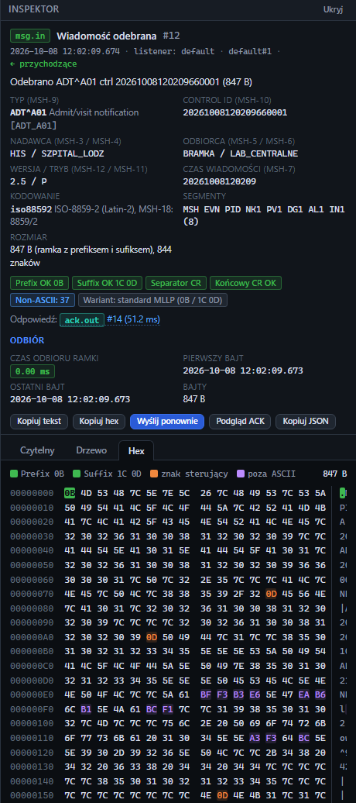
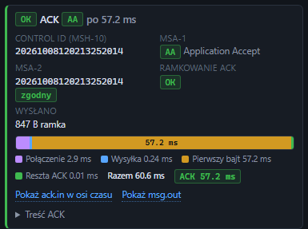
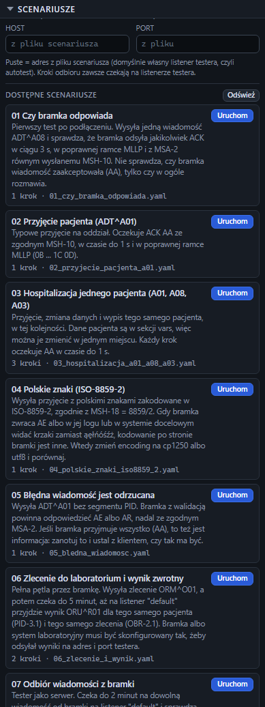
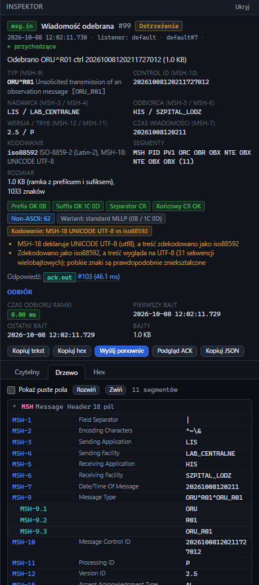

Receive and send HL7 v2 over MLLP, check every frame byte by byte and see each connection, message and ACK with millisecond timestamps. Made for testing integration gateways at a hospital, on the hospital's own server.
Copy one file to the server, run it, open the browser. That is the whole setup.

Latest release: checking…
One .exe for Windows 10, 11 and Windows Server, no installer
and no runtime to install. Put it in a folder of its own: it keeps its
configuration, scenarios and logs next to itself.
One binary for x64 distributions with glibc 2.28 or newer: RHEL, Rocky
and Alma 8+, Ubuntu 20.04+, Debian 10+. chmod +x, run, done.
SHA-256 of the two files above, to check a copy that travelled to a server through several hands.
Download checksumsThe files are not signed with a certificate, so Windows SmartScreen shows “Windows protected your PC”. Choose “More info”, then “Run anyway”. Each file is about 85 MB because it carries its own Node.js runtime. The interface is in Polish.
Everything a gateway acceptance test needs, in a browser tab served by the program running next to the gateway.
Listeners wait for the gateway on as many ports as you need and answer with AA, AE, AR, no ACK at all or an ACK from your own template, with an optional delay. The client connects to the gateway and sends.
Prefix and suffix against what you expect, CR or LF between segments, the CR before the suffix, stray control bytes. A wrong suffix shows up after three seconds of silence, without waiting for a disconnect.
Connections, messages and ACKs with millisecond timestamps, and the gateway's response time split into connect, send, first byte and ACK, measured on a monotonic clock. Series of messages give min, average, max and p95.
Colour-coded segments with field names on hover, a tree with HL7 2.5 field names, a hex view with the frame bytes marked, and a check of the encoding against MSH-18: UTF-8, CP1250, ISO-8859-2 and more.
YAML files with send, receive and wait steps and checks on the ACK, fields, frame and timing. Nine ready ones, from “does the gateway answer at all” to an order sent out and its result coming back.
Export the timeline as CSV for a table of response times, or as NDJSON with every byte. The full history also goes to a log file next to the program.
No Docker, no Node.js, no installer. On first start the program writes its configuration, scenarios and example messages next to itself. Run it from a console or as a service.
Every panel, form and dialog has its own page in the manual, with a screenshot and every field explained.
One window: what to send and listen on to the left, everything that happened in the middle, the selected event to the right.





The interface has no password. Anyone who opens it can send HL7 to any
address the server reaches and change the listeners, so do not expose it
to the internet: limit its port on the firewall, or start the program with
--listen 127.0.0.1:8080 and reach it through SSH.
The log and the exports hold the full messages. Nothing is sent anywhere by the program: no telemetry, no account, no update check. Delete the folder when the tests are over.
Every release comes with the SHA-256 of both files, published next to them on this page.